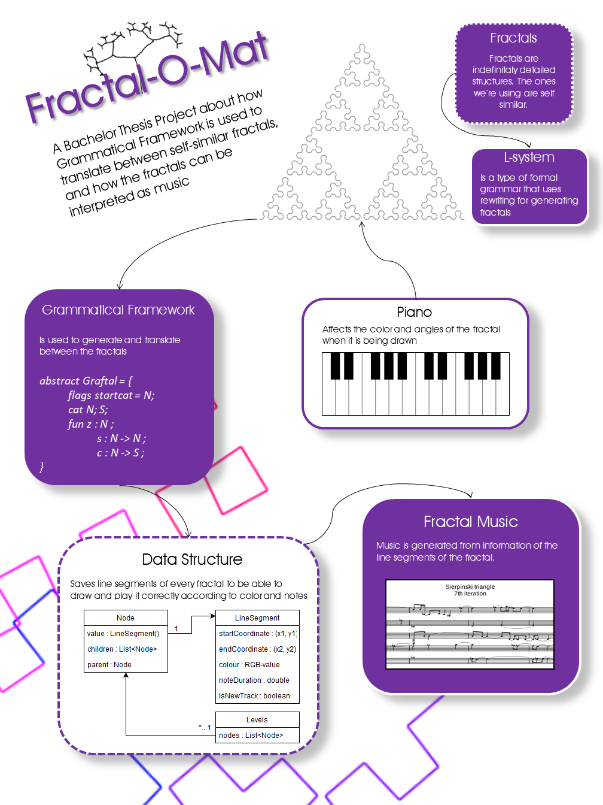

Welcome stranger!
This is a web application devoted to a bachelor's thesis about Grammatical Framework, fractals and music. In the Fractal Fun tag you can play around with the product developed in the project. In the Resources tag you can find useful links related to the project.
If you want to read our bachelor's thesis report or view our GitHub repo, you can download it here or be redirected to the repository.
Download OR view on